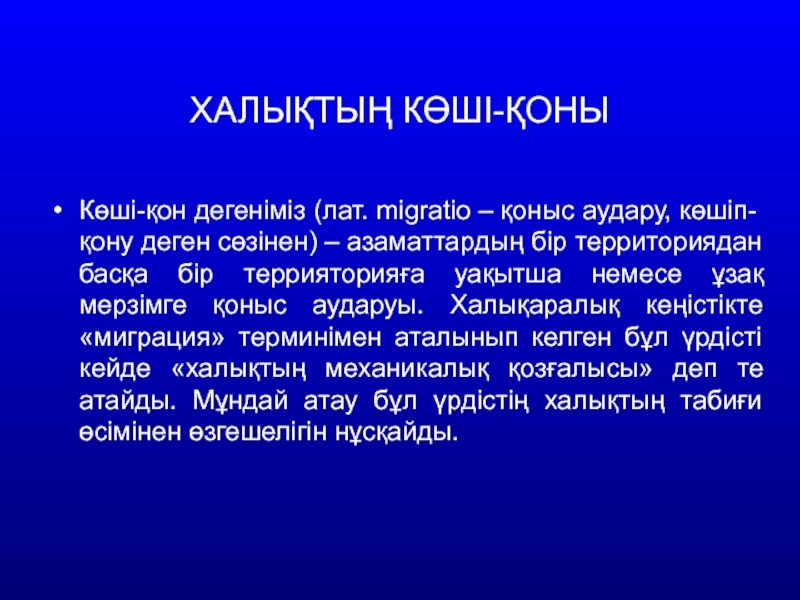
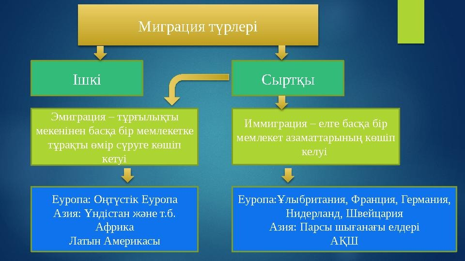
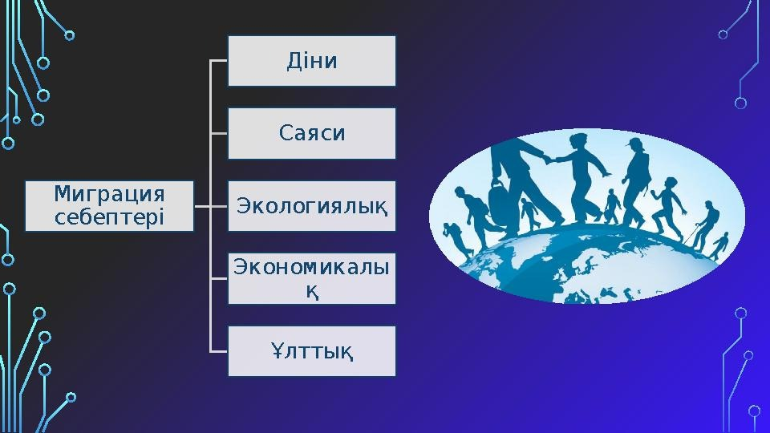
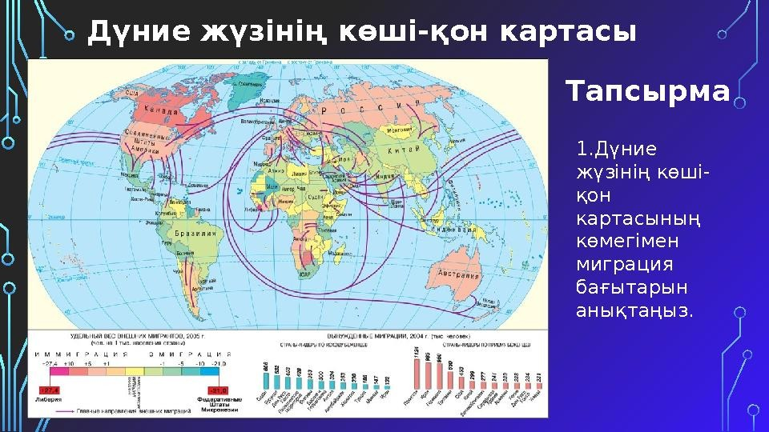
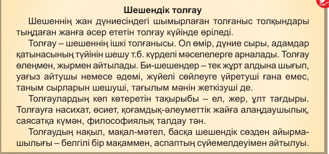

16-ТАПСЫРМА (СӨЖ № 16.1)
Әлем және Қазақстандағы миграция
I. Теориялық кешен (дәріс тезистері)
Мақсаты: Білім алушылар әлемдік және Қазақстандағы миграциялық үрдістерді түсінеді және ажырата алады, миграция түрлерін (ішкі, сыртқы; ерікті, еріксіз) сипаттайды және мысалдар келтіре алады, Қазақстандағы миграцияның себептері мен салдарын талдайды және картамен жұмыс жасай отырып, миграциялық бағыттарды анықтайды.
Міндеттері: Миграция ұғымы мен түрлерін түсіну, әлем және Қазақстандағы миграциялық үрдістерді салыстыру, миграцияның себептері мен салдарын талдау.
Бағалау критерийлері: Мәтінде көтерілген мәселеге талқылау сұрақтарын құрастырады. Мәтін құрылымын мен рәсімделуін, жанрлық ерекшеліктерін талдайды. Мәтіннің маңызды тұстары мен үрдістерді талдап жазады, өзіндік тұжырым жасайды.
Дәрістің қысқаша тезистері
Миграция (халықтың қоныс аударуы) – адамдардың қандай да бір аумақтардың шекарасынан өтіп, тұрақты немесе уақытша мекенжайын ауыстыру процесі. Миграция ішкі (ел ішіндегі) және сыртқы (эмиграция, иммиграция), сондай-ақ ерікті және еріксіз болып бөлінеді.
Әлемдік миграция үрдістері экономикалық, саяси, экологиялық және әлеуметтік факторларға байланысты жүзеге асады. Қазіргі таңда дамыған елдерге еңбек мигранттарының ағыны жоғары, ал дамушы елдерде урбанизация (ауылдан қалаға көшу) процесі қарқынды жүріп жатыр.
Қазақстандағы миграциялық саясат халықтың оңтүстіктен солтүстікке қоныс аударуын ынталандыруға, отандастарымызды (қандастарды) тарихи отанына қайтаруға және білікті мамандарды тартып, заңсыз миграцияны шектеуге бағытталған.

1-сурет: Дүниежүзілік миграциялық ағындардың картасы
Тапсырма:
Дүниежүзінің көші-қон картасының көмегімен миграция бағыттарын анықтаңыз.

2-сурет: Қазақстандағы миграциялық үрдістер мен халықтың қоныс аударуы
Тапсырманы орындау бойынша нұсқаулық (орындау тәртібі):
- Берілген суреттер арқылы тақырыптың мәнін ашып, есепке алады;
- Тапсырманы орындайды.
Тапсырмадан күтілетін нәтиже: Берілген ақпаратты оқу, есте сақтап алу, сұрақтарға жауап беру.
Тапсыру формасы: Ауызша түрде.
Модуль / пән бойынша ұсынылатын әдебиеттер тізіміне сілтемелер: Okulyk.kz - Қазақ тілі оқулығы
II. Практикалық кешен (СӨЖ № 16.2)
1-тапсырма. Мәтінмен жұмыс және бақылау сұрақтары
Тапсырма: Мәтінді оқып, сұрақтарға жауап беріңдер.
Заңсыз миграция мәселесі – дүниежүзін алаңдатып отырған маңызды мәселе. «Daily Express» тілшілерінің мәліметінше, Ұлыбританияда туристердің тәртіп бұзуы жиілеген, шетел азаматтары жасаған қылмыс саны былтырғыдан 16%-ке артқан. Жергілікті полиция қызметкерлерінің айтуынша, мигранттар жиі қылмыс жасайды. Жалпы алғанда, бұл мемлекетте үш минут сайын өзге ұлт өкілі қамауға алынады. Лондонда, статистика бойынша, әрбір үшінші мигрант тәртіп бұзады. Сол себепті елде криминалды туризм өршіп тұр. Еуропада Балқан жерінің азаматтары құқық бұзушылардың алдын бастап тұр.
Қазақстандағы криминалдың өршуіне шетелдік жұмыс күші санының артуы себеп болуы мүмкін. Егер заңсыз іс-әрекеттерге, тәртіп бұзушыларға тиісті шаралар қолданылмаса, ұлттық қауіпсіздік құлдырайды. Ондай жағдайда елімізде криминалды ортаның пайда болмасына кім кепіл?! (Дайындаған Арай Жұматай)

3-сурет: Заңсыз миграция және құқық бұзушылық мәселелері
Бақылау сұрақтары:
- Ұлыбританияда шетел азаматтары жасаған қылмыс саны қанша пайызға артты?
- Лондон қаласындағы мигранттардың тәртіп бұзуына қатысты қандай статистика келтірілген?
- Қазақстанда жедел алдын алу шаралары барысында қанша заңсыз мигрант анықталды?
- Заңсыз мигранттардың көбеюі елде қандай мәселелерге әкелуі мүмкін?
- Қазақстандағы жұмыс күшінің қандай бөлігі заңсыз мигранттардан тұрады және олар қандай жұмыстармен айналысады?
2-тапсырма. Өлеңді талдау және эссе жазу
Тапсырма: Өлеңді негізге алып, ауылдан қалаға жаппай көшу процесінің (урбанизация) ел экономикасына әсері туралы ойларыңды жеткізіңдер.
Сен де кеттің,
Мен де кеттім,
Ол да кетті ауылдан.
Осынымыз ұят болды-ау,
Ұят болды-ау қауымнан!..
Момын жұрттың арқа сүйер
Азаматы біз едік.
Тұлпарлардан, тұғырлардан
Қалған бір-бір із едік.
Біз де кеттік,
Басқа жаққа бетімізді түзедік…
Жеке-жеке бақыт іздеп,
Жеке өмір түзедік.
Жетер енді!..
Туған жердің топырағына тізе бүк!
(Мұқағали Мақатаев)

4-сурет: Урбанизация және ауылдан қалаға қоныс аудару үрдісі
3-тапсырма. Шешендік толғаудың тақырыбын анықтау
Тапсырма: Мәтінді оқып, шешендік толғаудың тақырыбын анықтаңдар.
Әділ бидің алдынан іс кетпейді,
Жәбірлікті бекерге істетпейді.
Ердің құнын екі ауыз сөзбен шешіп,
Абыройын кісінің еш төкпейді.
Қылар жақсы түймеден түйедейді,
Жөнін тауып, әр істі жүйелейді.
Жаман болса төреңіз, ептей алмай,
Ақ ісіңді қаралап, күйелейді.
Дұшпандарды әділ би дос қылады,
Жаман би дауыңа дау қостырады.
Бұл бір мақал: киікті ата алмаған
Атамын деп киікті бостырады.
Жақсы менен жаманның нарқы басқа,
Айта берсең, бірталай сөз болады.
(Байжігіт би)
4-тапсырма. «РАФТ» стратегиясы бойынша интервью
Тапсырма: Ғылыми стильдің тілдік құралдарын қолданып, «РАФТ» стратегиясымен миграциялық полиция қызметкерінен «Дүниежүзілік миграция: себептері мен салдары» тақырыбында интервью алыңдар.

5-сурет: Миграциялық полиция және халықаралық миграциялық бақылау
Модуль / пән бойынша ұсынылатын әдебиеттер тізіміне сілтемелер: Okulyk.kz - Қазақ тілі оқулығы
III. Бағалау парағы
| № | Тапсырма | Дескрипторлар | Ұпай саны | Студенттің ұпай саны |
|---|---|---|---|---|
| 1 | Дүниежүзінің көші-қон картасының көмегімен миграция бағыттарын анықтау |
• Берілген суреттер арқылы тақырыптың мәнін ашып, есепке алады; • Тапсырманы орындайды. |
10 балл 10 балл |
|
| 2 | Мәтінді оқып, сұрақтарға жауап беру |
• Мәтінді оқиды; • Сұрақтарға жауап береді. |
10 балл 10 балл |
|
| 3 | Өлеңді негізге алып, ауылдан қалаға жаппай көшу процесінің ел экономикасына әсерін талдау | • Қалаға жаппай көшу процесінің ел экономикасына әсері туралы ойларын жеткізеді. | 20 балл | |
| 4 | Мәтінді оқып, шешендік толғаудың тақырыбын анықтау |
• Мәтінді оқиды; • Шешендік толғаудың тақырыбын анықтайды. |
10 балл | |
| 5 | «Дүниежүзілік миграция: себептері мен салдары» тақырыбында интервью алу («РАФТ») | • «Дүниежүзілік миграция: себептері мен салдары» тақырыбында интервью алады. | 30 балл | |
| Барлығы: | 100 балл | / 100 | ||